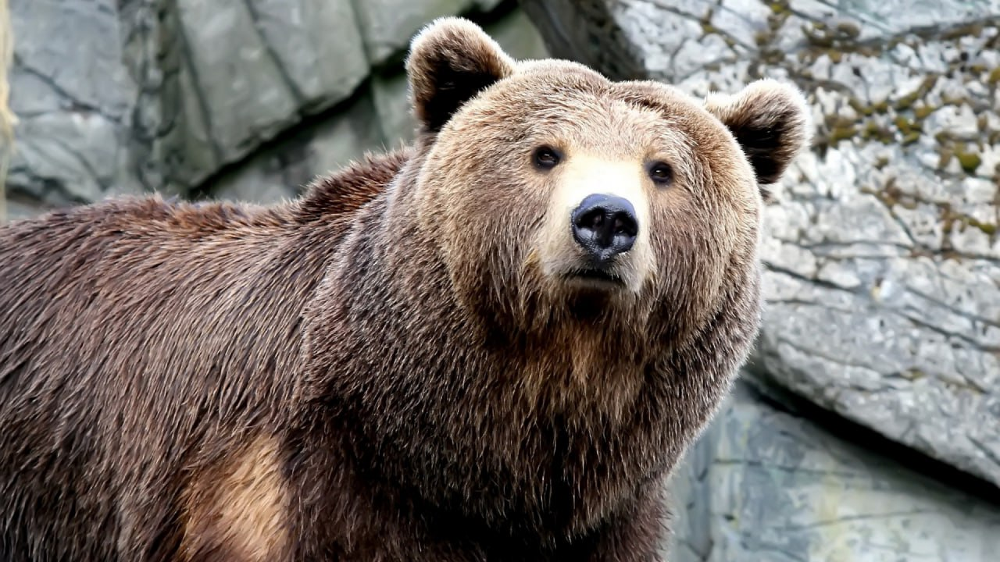

Медвежиная википедия
Медве́ди (лат. Ursus) — род млекопитающих отряда хищных.
Согласно палеонтологическим сведениям, род медведей появился 5—6 миллионов лет назад. Первым его представителем в настоящее время считают медведя Ursus minimus — относительно небольшое животное, чьи ископаемые остатки найдены на территории Франции. Все современные четыре вида рода, а также ряд вымерших — таких, например, как пещерный медведь (Ursus spelaeus), — происходят от этрусского медведя (Ursus etruscus), жившего 1—2 миллиона лет назад.
Самым молодым видом рода является белый медведь, который отделился от бурого медведя примерно 200 000 лет назад.